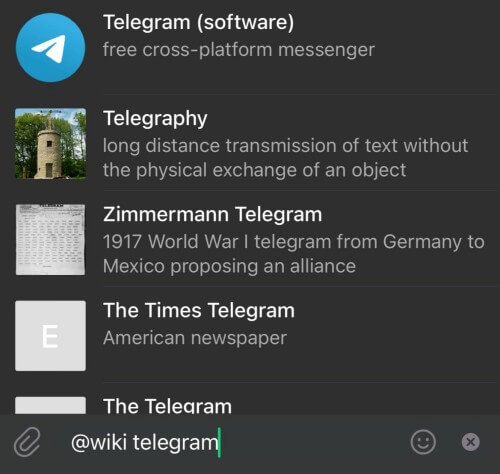
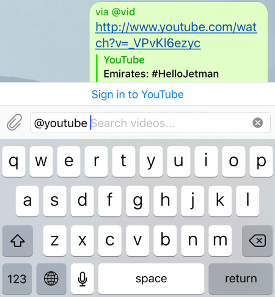
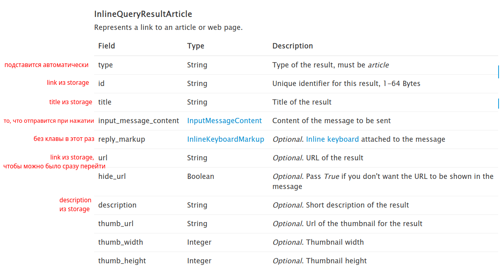
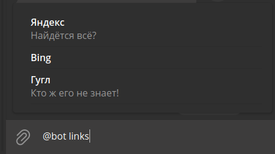
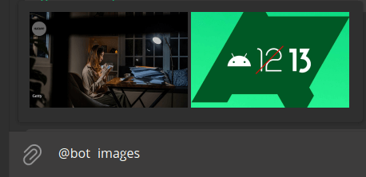
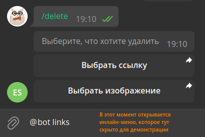
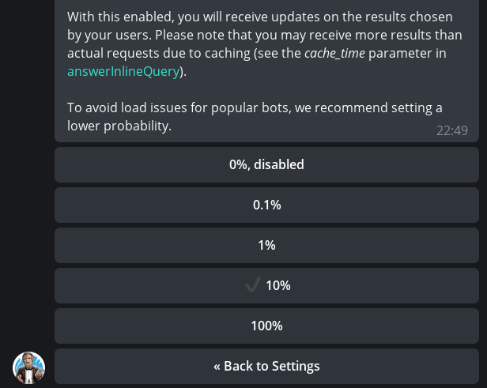

Инлайн-режим¶
Используемая версия aiogram: 3.7.0
Теория¶
Зачем нужен инлайн-режим?¶
В предыдущих главах бот и человек общались каждый сам за себя, однако в Telegram существует специальный режим, позволяющий пользователю отправить информацию от своего имени, но с помощью бота. Это называется инлайн-режим (Inline mode), и вот как он выглядит в реальной жизни:

Но как на практике вообще можно применить такую фичу? Предлагаю взглянуть на названия некоторых около-официальных Telegram-ботов, у которых есть инлайн-режим:
Список можно продолжать долго, но суть, надеюсь, ясна: инлайн-режим отлично подходит для поиска контента для вставки в текущий чат. Часть возможностей таких ботов (like, poll, gif) Telegram внедрил в официальные приложения, но остальные отлично используются по сей день.
Важно
Напомню, что если к сообщению, отправленному из инлайн-режима, прикреплена клавиатура с колбэк-кнопкой,
то при её нажатии бот получит объект CallbackQuery без объекта Message внутри. Вместо
этого будет мало о чём говорящий inline_message_id.
Формат входящих запросов¶
Когда пользователь пишет в чате юзернейм бота и далее вводит текст, создаётся апдейт типа InlineQuery. Если внимательно изучить поля этого объекта, то можно заметить некоторые странности.
Во-первых, нет айди чата, из которого вызвали бота, вместо этого опциональное
поле chat_type, показывающее (если непустое) тип чата (личка, группа, супергруппа, канал). Причина этому простая:
поскольку для использования бота в инлайн-режиме не надо его никуда добавлять, добавление объекта Chat
позволило бы незаметно отслеживать и собирать чаты в телеге.
Во-вторых, есть поле offset, причём это не число, а строка. Дело в том, что по умолчанию бот может отправить не более
50 результатов пользователю в ответ на инлайн-запрос. Чтобы показать больше, надо при ответе передать параметр next_offset,
который продублируется в поле offset у следующего InlineQuery. Так бот поймёт, что надо подгрузить новые данные,
начиная с offset. А строка это потому что помимо чисел можно использовать какие-нибудь идентификаторы, типа UUID.
Формат исходящих ответов¶
Для ответа на запросы пользователя существует ровно один метод:
answerInlineQuery.
Но отправляемых типов аж целых 20. Точнее,
по факту их 11, поскольку оставшиеся — просто те же типы, но с другими входными данными, например, file_id
вместо ссылки на медиафайл. Различные типы лучше всего не смешивать друг с другом, особенно Article с остальными.
Рассмотрим некоторые из них отдельно.

Пожалуй, самый часто используемый тип — это InlineQueryResultArticle
(на изображении сверху). Во всех основных клиентах выглядит как стопка из прямоугольных блоков, у которых всегда есть
заголовок, иногда присутствует описание, а слева отображается либо картинка-превью, либо просто заглушка.
Если разработчик задал атрибут url, то некоторые клиенты отображают указанную ссылку под строкой описания, а
превью становится кликабельным и ведёт по самой ссылке напрямую в браузер. При нажатии на строку отправляется то,
что задано в аргументе input_message_content (он обязательный), который может иметь 5 разных типов:
- текст
- геолокация
- достопримечательность (venue)
- контакт
- счёт на оплату (invoice)
Остальные типы относятся к т.н. «медиафайлам», которые мы рассмотрим на примере изображений. При ответе набором изображений данные выстраиваются либо вертикальными плитками, как на скриншоте выше, либо прокручиваемой горизонтальной полосой (например, в iOS-версии).
Если вы ещё раз откроете раздел про InlineQueryResult, то
увидите, что Photo (как и некоторые другие типы) представлено в двух вариантах:
InlineQueryResultPhoto и InlineQueryResultCachedPhoto. Разница в том, что первый вариант принимает ссылку
на изображение из Интернета, а второй — file_id от уже загруженного в Telegram медиа.
Важно
В инлайн-режиме нельзя заливать изображения напрямую из файла. Либо ссылка в Интернете, либо file_id.
Третьего не дано.
По умолчанию, нажатие на медиафайл из списка результатов приводит к отправке этого медиа в вызванный чат.
Однако если задать аргумент input_message_content (в случае с медиа он уже необязательный), то при нажатии будет
отправлено то, что задано в этом аргументе. Например, нажатие на обложку фильма отправит его текстовое описание
со ссылкой на просмотр в онлайн-кинотеатре. Или при нажатии на фото сотрудника отправится его телефонный номер в виде
контакта 👀. Кстати, несмотря на то, что у медиа есть аргументы title и description, клиенты их не отображают,
да и сам Bot API их игнорирует.
У метода answerInlineQuery есть несколько аргументов, на которые надо обратить внимание. Во-первых, это cache_time.
Он определяет, на какой период результат запроса может быть закэширован серверами телеги, чтобы не слать его в бота.
Если ваши данные статичные или меняются редко, смело повышайте это значение. Во-вторых, флаг is_personal,
влияющий на то, будет ли закэширован результат только для одного пользователя или сразу для всех. Если ваш бот
показывает персонализированные значения в зависимости от ID юзера, выставляйте в True.
Автор этих строк однажды забыл указать флаг is_personal в его боте @my_id_bot,
выставил кэш на 86400 секунд (1 сутки) и выслушал много возмущений от пользователей, отправлявших его ID вместо их
собственных. Учитесь на чужих ошибках, не на своих.
В-третьих, строковый аргумент next_offset, позволяющий реализовывать подгрузку результатов по мере прокрутки, поскольку
в одном ответе на InlineQuery можно вернуть не более 50 значений. Использование next_offset мы рассмотрим в отдельном
примере.
В-четвёртых, switch_pm_text и switch_pm_parameter. Помимо результатов запроса, бот может над ними показать маленькую
кнопочку с текстом из аргумента switch_pm_text, нажатие на которую аналогично диплинку, т.е. юзер перейдёт в
личку с ботом, вместо поля ввода будет кнопка «НАЧАТЬ», а при нажатии боту прилетит сообщение с текстом
/start ТЕКСТ, где вместо ТЕКСТ — значение аргумента switch_pm_parameter.

Подобную штуку очень удобно использовать, если по конкретному запросу нет результатов или хочется дать возможность юзеру быстро что-то добавить. Есть и ещё одна фича, но её мы рассмотрим позднее в процессе разработки бота. Кстати, о нём...
Практика¶
Чтобы бот знал, что надо показывать при вызове в инлайн-режиме, ему нужны какие-то данные: либо заранее сохранённые, либо получаемые от самого пользователя. В качестве примера напишем бота, который будет принимать от юзера ссылки и картинки, а затем показывать это всё добро в инлайн-режиме по запросу.
Не забудьте включить инлайн-режим у бота через @BotFather: Bot Settings -> Inline Mode -> Turn on
Система хранения¶
Дабы не погружаться сильно в детали, тем более, что эта глава и так довольно длинная, договоримся, что наш тестовый бот будет использовать обычный in-memory словарь в качестве имитации базы данных. Это позволит не заморачиваться по поводу сброса состояния при отладке, а также упростит наполнения хранилища заранее, если вы вдруг захотите запускать бота сразу с готовыми ссылками или картинками. Для каждого из двух типов данных будет по три функции: добавить данные, получить данные, удалить данные. Собственно, вот весь код файла:
from typing import Optional
# В реальной жизни здесь должна быть нормальная СУБД.
# Но для примера нам будет достаточно показать на обычном словаре.
# Учтите, что он сбрасывается при перезапуске бота.
data = dict()
def add_link(
telegram_id: int,
link: str,
title: str,
description: Optional[str]
):
"""
Сохраняет ссылку в словарь
:param telegram_id: ID юзера в Telegram
:param link: текст ссылки
:param title: заголовок ссылки
:param description: (опционально) описание ссылки
"""
data.setdefault(telegram_id, dict())
data[telegram_id].setdefault("links", dict())
data[telegram_id]["links"][link] = {
"title": title,
"description": description
}
def add_photo(
telegram_id: int,
photo_file_id: str,
photo_unique_id: str
):
"""
Сохраняет изображение в словарь
:param telegram_id: ID юзера в Telegram
:param photo_file_id: file_id изображения
:param photo_unique_id: file_unique_id изображения
"""
data.setdefault(telegram_id, dict())
data[telegram_id].setdefault("images", [])
if photo_file_id not in data[telegram_id]["images"]:
data[telegram_id]["images"].append((photo_file_id, photo_unique_id))
def get_links_by_id(telegram_id: int) -> dict:
"""
Получает сохранённые ссылки пользователя
:param telegram_id: ID юзера в Telegram
:return: если по юзеру есть данные, то словарь со ссылками
"""
if telegram_id in data and "links" in data[telegram_id]:
return data[telegram_id]["links"]
return dict()
def get_images_by_id(telegram_id: int) -> list[str]:
"""
Получает сохранённые изображения пользователя
:param telegram_id: ID юзера в Telegram
:return:
"""
if telegram_id in data and "images" in data[telegram_id]:
return [item[0] for item in data[telegram_id]["images"]]
return []
def delete_link(telegram_id: int, link: str):
"""
Удаляет ссылку
:param telegram_id: ID юзера в Telegram
:param link: ссылка
"""
if telegram_id in data:
if "links" in data[telegram_id]:
if link in data[telegram_id]["links"]:
del data[telegram_id]["links"][link]
def delete_image(telegram_id: int, photo_file_unique_id: str):
"""
Удаляет изображение
:param telegram_id: ID юзера в Telegram
:param photo_file_unique_id: file_unique_id изображения для удаления
"""
if telegram_id in data and "images" in data[telegram_id]:
for index, (_, unique_id) in enumerate(data[telegram_id]["images"]):
if unique_id == photo_file_unique_id:
data[telegram_id]["images"].pop(index)
Команды в боте¶
У бота будет несколько общих команд: /start, /help, /save, /delete и /cancel. Первые две информационные,
/save начинает процесс сохранения данных, /delete начинает процесс удаления данных, а /cancel, соответственно,
прерывает один из запущенных процессов. Начнём с команды /save.
Сохранение данных¶
На этот раз мы опишем состояния (states) в отдельном файле, чтобы было удобнее импортировать. Для этого создадим файл
states.py и реализуем класс SaveCommon, где будет одно состояние «ожидает ввод»:
from aiogram.fsm.state import StatesGroup, State
class SaveCommon(StatesGroup):
waiting_for_save_start = State()
Теперь займёмся обработкой сохранения сообщений различных типов
Текст¶
Начнём с текстовых сообщений. Идея простая: пользователь кидает сообщение. Если там есть хотя бы одна ссылка, то
она извлекается, а далее предлагается ввести название ссылки (обязательно) и описание. Последний шаг можно пропустить
командой /skip. Если ссылок несколько, то берётся только первая.
Помимо описанного выше состояния «ожидает ввод», будет ещё два специфичных для текста: «ожидает ввод заголовка» и
«ожидает ввод описания». В states.py добавим эти стейты:
# тут предыдущий код
class TextSave(StatesGroup):
waiting_for_title = State()
waiting_for_description = State()
Начнём с двух хэндлеров на текст в стейте SaveCommon -> waiting_for_save_start. Надо ловить сообщения со ссылками.
В главе про фильтры и мидлвари мы уже делали похожий фильтр, но для
юзернеймов. Настало время его оттуда скопировать и адаптировать под ссылки:
from typing import Union, Dict, Any
from aiogram.filters import BaseFilter
from aiogram.types import Message
class HasLinkFilter(BaseFilter):
async def __call__(self, message: Message) -> Union[bool, Dict[str, Any]]:
# Если entities вообще нет, вернётся None,
# в этом случае считаем, что это пустой список
entities = message.entities or []
# Если есть хотя бы одна ссылка, возвращаем её
for entity in entities:
if entity.type == "url":
return {"link": entity.extract_from(message.text)}
# Если ничего не нашли, возвращаем None
return False
Чтобы сократить импорт, отредактируем файл filters/__init__.py:
from .text_has_link import HasLinkFilter
# Делаем так, чтобы затем просто импортировать
# from filters import HasLinkFilter
__all__ = [
"HasLinkFilter"
]
Почему хэндлеров на текст нужно два? Первый будет ловить сообщения, где есть ссылка, а второй — где её нет. Пишем:
# <импорты>
@router.message(SaveCommon.waiting_for_save_start, F.text, HasLinkFilter())
async def save_text_has_link(message: Message, link: str, state: FSMContext):
await state.update_data(link=link)
await state.set_state(TextSave.waiting_for_title)
await message.answer(
text=f"Окей, я нашёл в сообщении ссылку {link}. "
f"Теперь отправь мне заголовок (не больше 30 символов)"
)
@router.message(SaveCommon.waiting_for_save_start, F.text)
async def save_text_no_link(message: Message):
await message.answer(
text="Эмм.. я не нашёл в твоём сообщении ссылку. "
"Попробуй ещё раз или нажми /cancel, чтобы отменить."
)
Далее ожидаем от пользователя ввод заголовка записи. Здесь тоже можно разбить логику на два хэндлера: для удачного и неудачного стечения обстоятельств:
# импорты и предыдущие шаги
@router.message(TextSave.waiting_for_title, F.text.func(len) <= 30)
async def title_entered_ok(message: Message, state: FSMContext):
await state.update_data(title=message.text, description=None)
await state.set_state(TextSave.waiting_for_description)
await message.answer(
text="Так, заголовок вижу. Теперь введи описание "
"(тоже не больше 30 символов) "
"или нажми /skip, чтобы пропустить этот шаг"
)
@router.message(TextSave.waiting_for_title, F.text)
async def too_long_title(message: Message):
await message.answer("Слишком длинный заголовок. Попробуй ещё раз")
return
Обратите внимание на код F.text.func(len) <= 30. Magic filter позволяет передать на вход какую-либо функцию, которая
выполнится над тем, что указано до .func. Т.е. F.text.func(len) -> len(F.text) и только если атрибут .text
не является None (иными словами, здесь ещё и проверка на контент-тайп). Но вообще конкретно для len()
есть поддержка прям в
magic-filter:
F.text.len() <= 30
На очереди хэндлер на описание. Здесь можно снова разбить на два хэндлера... постойте, но ведь функция too_long_title(),
по сути, может так же подходить и для шага с описанием, раз уж у нас одинаковые лимиты на текст! Переименуем её и
добавим фильтр на другой стейт:
@router.message(TextSave.waiting_for_title, F.text)
@router.message(TextSave.waiting_for_description, F.text)
async def text_too_long(message: Message): # бывш. too_long_title()
await message.answer("Слишком длинный заголовок. Попробуй ещё раз")
return
Теперь возьмёмся за последний хэндлер, в который попадаем либо при вводе короткого описания, либо по команде /skip.
А раз надо ловить два входа, то вешаем два декоратора, в аргументах принимаем опциональный CommandObject и внутри
смотрим: если команды нет, значит, ввели описание:
# Эта функция должна быть ПЕРЕД text_too_long() !
@router.message(TextSave.waiting_for_description, F.text.func(len) <= 30)
@router.message(TextSave.waiting_for_description, Command("skip"))
async def last_step(
message: Message,
state: FSMContext,
command: Optional[CommandObject] = None
):
if not command:
await state.update_data(description=message.text)
# Сохраняем данные в нашу ненастоящую БД
data = await state.get_data()
add_link(message.from_user.id, data["link"], data["title"], data["description"])
await message.answer("Ссылка сохранена!")
await state.clear()
Итак, мы сделали набор хэндлеров для сохранения ссылок в нашу in-memory базу данных. Вот весь код файла целиком:
from typing import Optional
from aiogram import Router, F
from aiogram.filters.command import Command, CommandObject
from aiogram.fsm.context import FSMContext
from aiogram.types import Message, InlineKeyboardMarkup, InlineKeyboardButton
from filters import HasLinkFilter
from states import SaveCommon, TextSave
from storage import add_link
router = Router()
@router.message(SaveCommon.waiting_for_save_start, F.text, HasLinkFilter())
async def save_text_has_link(message: Message, link: str, state: FSMContext):
await state.update_data(link=link)
await state.set_state(TextSave.waiting_for_title)
await message.answer(
text=f"Окей, я нашёл в сообщении ссылку {link}. "
f"Теперь отправь мне описание (не больше 30 символов)"
)
@router.message(SaveCommon.waiting_for_save_start, F.text)
async def save_text_no_link(message: Message):
await message.answer(
text="Эмм.. я не нашёл в твоём сообщении ссылку. "
"Попробуй ещё раз или нажми /cancel, чтобы отменить."
)
@router.message(TextSave.waiting_for_title, F.text.func(len) <= 30)
async def title_entered_ok(message: Message, state: FSMContext):
await state.update_data(title=message.text, description=None)
await state.set_state(TextSave.waiting_for_description)
await message.answer(
text="Так, заголовок вижу. Теперь введи описание "
"(тоже не больше 30 символов) "
"или нажми /skip, чтобы пропустить этот шаг"
)
@router.message(TextSave.waiting_for_description, F.text.func(len) <= 30)
@router.message(TextSave.waiting_for_description, Command("skip"))
async def last_step(
message: Message,
state: FSMContext,
command: Optional[CommandObject] = None
):
if not command:
await state.update_data(description=message.text)
# Сохраняем данные в нашу ненастоящую БД
data = await state.get_data()
add_link(message.from_user.id, data["link"], data["title"], data["description"])
await state.clear()
kb = [[InlineKeyboardButton(
text="Попробовать",
switch_inline_query="links"
)]]
await message.answer(
text="Ссылка сохранена!",
reply_markup=InlineKeyboardMarkup(inline_keyboard=kb)
)
@router.message(TextSave.waiting_for_title, F.text)
@router.message(TextSave.waiting_for_description, F.text)
async def text_too_long(message: Message):
await message.answer("Слишком длинный заголовок. Попробуй ещё раз")
return
Изображения¶
С картинками гораздо проще; они добавляются в один шаг. Но есть нюанс: помимо file_id для последующего отображения,
нам надо сохранять file_unique_id, поскольку он пригодится, когда мы позволим юзеру удалять сохранённые картинки:
from aiogram import Router, F
from aiogram.fsm.context import FSMContext
from aiogram.types import Message, PhotoSize
from states import SaveCommon
from storage import add_photo
router = Router()
@router.message(SaveCommon.waiting_for_save_start, F.photo[-1].as_("photo"))
async def save_image(message: Message, photo: PhotoSize, state: FSMContext):
add_photo(message.from_user.id, photo.file_id, photo.file_unique_id)
await message.answer("Изображение сохранено!")
await state.clear()
Отображение данных¶
Окей, данные сохранять научились, теперь надо их как-то отобразить. Для этого бот должен ловить апдейты с типом
inline_query, а в хэндлер придёт объект типа InlineQuery.
Условимся, что на пустой запрос (пока) ничего показывать не будем, на запрос @bot links покажем список ссылок, а
на запрос @bot images — картинки. Вместо @bot, конечно же, будет юзернейм бота.
Текст¶
Для ответа текстовыми сообщениями нам нужно собрать список объектов с типом
InlineQueryResultArticle. Все необходимые
(и даже дополнительные) данные у нас уже есть:

Для аргумента input_message_content напишем простую вложенную функцию, которая будет возвращать текст с учётом наличия или
отсутствия описания:
def get_message_text(
link: str,
title: str,
description: Optional[str]
) -> str:
text_parts = [f'{html.bold(html.quote(title))}']
if description:
text_parts.append(html.quote(description))
text_parts.append("") # добавим пустую строку
text_parts.append(link)
return "\n".join(text_parts)
Теперь опишем сам хэндлер:
@router.inline_query(F.query == "links")
async def show_user_links(inline_query: InlineQuery):
# Эта функция просто собирает текст, который будет
# отправлен при нажатии на вариант в инлайн-режиме
def get_message_text():
# эта вложенная функция описана выше ↑
results = []
for link, link_data in get_links_by_id(inline_query.from_user.id).items():
# В итоговый массив запихиваем каждую запись
results.append(InlineQueryResultArticle(
id=link, # ссылки у нас уникальные, потому проблем не будет
title=link_data["title"],
description=link_data["description"],
input_message_content=InputTextMessageContent(
message_text=get_message_text(
link=link,
title=link_data["title"],
description=link_data["description"]
),
parse_mode="HTML"
)
))
# Важно указать is_personal=True!
await inline_query.answer(results, is_personal=True)
Получаем в итоге (у второй записи был пропущен этап со сводом description):

При нажатии получается вот такое красивое сообщение:

Изображения¶
С изображениями немного попроще, однако тут есть нюанс: мы не можем в качестве айди конкретного варианта использовать
file_id картинки, поскольку он длиннее 64 байт (лимит Bot API). Поэтому мы будем использовать порядковый номер
элемента в массиве, сконвертированный в строку. В остальном код предельно похож на предыдущий:
@router.inline_query(F.query == "images")
async def show_user_images(inline_query: InlineQuery):
results = []
for index, file_id in enumerate(get_images_by_id(inline_query.from_user.id)):
# В итоговый массив запихиваем каждую запись
results.append(InlineQueryResultCachedPhoto(
id=str(index), # индекс элемента в list
photo_file_id=file_id
))
# Важно указать is_personal=True!
await inline_query.answer(results, is_personal=True)
Ну и результат:

Удаление данных¶
Сохранёнки надо время от времени чистить. Так и мы хотим дать возможность пользователю удалять накопленные ссылки
и/или картинки. Для этого сделаем обработчик на команду /delete. Но заставлять пользователя вводить юзернейм бота
и писать links или images мы не хотим. Для этого под ответом на команду расположим две кнопки. Одна откроет
инлайн-режим на просмотре ссылок, другая — на просмотре изображений.
Добавим в states.py новый класс:
class DeleteCommon(StatesGroup):
waiting_for_delete_start = State()
Теперь сделаем хэндлер на команду /delete:
# новый импорт
from aiogram.filters.state import StateFilter
@router.message(Command("delete"), StateFilter(None))
async def cmd_delete(message: Message, state: FSMContext):
kb = []
kb.append([
InlineKeyboardButton(
text="Выбрать ссылку",
switch_inline_query_current_chat="links"
)
])
kb.append([
InlineKeyboardButton(
text="Выбрать изображение",
switch_inline_query_current_chat="images"
)
])
await state.set_state(DeleteCommon.waiting_for_delete_start)
await message.answer(
text="Выберите, что хотите удалить:",
reply_markup=InlineKeyboardMarkup(inline_keyboard=kb)
)
При нажатии на такую кнопку подставляется нужное значение в инлайн-режим, что сразу откроет список ссылок или изображений (для демонстрации я убрал пока всплывающего меню, чтобы было видно кнопки):

Если бы мы использовали просто switch_inline_query вместо switch_inline_query_current_chat, то Telegram предложил
бы выбрать чат, в который пользователь может писать, а затем подставил бы указанный текст там.
Осталось написать роутер, который будет ловить запросы на удаление и редактировать содержимое хранилища:
# импорты
router = Router()
@router.message(
DeleteCommon.waiting_for_delete_start,
F.text,
ViaBotFilter(),
HasLinkFilter()
)
async def link_deletion_handler(message: Message, link: str, state: FSMContext):
delete_link(message.from_user.id, link)
await state.clear()
await message.answer(
text="Ссылка удалена! "
"Выдача инлайн-режима обновится в течение нескольких минут.")
@router.message(
DeleteCommon.waiting_for_delete_start,
F.photo[-1].file_unique_id.as_("file_unique_id"),
ViaBotFilter()
)
async def image_deletion_handler(
message: Message,
state: FSMContext,
file_unique_id: str
):
delete_image(message.from_user.id, file_unique_id)
await state.clear()
await message.answer(
text="Изображение удалено! "
"Выдача инлайн-режима обновится в течение нескольких минут.")
Обратите внимание: изображения мы удаляем по file_unique_id, поскольку при каждой отправке картинки file_id
будет разный (если кратко: в полном file_id зашиты отметки времени и прочие непостоянные данные).
Switch туда и обратно¶
Когда мы ранее обсуждали формат исходящих ответов, то видели аргументы
с префиксом switch_pm. Давайте ими воспользуемся, чтобы пользователь мог сразу перейти к добавлению данных из любого
чата, а не только из лички с ботом.
Добавим в обработчик инлайн-запросов вышеупомянутые параметры. Для этого перепишем вызов метода answer_inline_query()
в файле handlers/inline_mode.py:
await inline_query.answer(
results, is_personal=True,
switch_pm_text="Добавить ещё »»",
switch_pm_parameter="add"
)
В файле handlers/common.py хэндлеру на команду /save добавим ещё одну точку входа через фильтр CommandStart
с диплинком add:
# новый импорт:
from aiogram.filters.command import CommandStart
@router.message(CommandStart(magic=F.args == "add"))
@router.message(Command("save"), StateFilter(None))
async def cmd_save(message: Message, state: FSMContext):
...
# Учтите, что хэндлер на просто /start должен идти ПОЗЖЕ
@router.message(Command(commands=["start"]))
async def cmd_start(message: Message, state: FSMContext):
...
А также на последнем этапе добавления текста и картинок добавим switch_inline_query кнопку с предложением
попробовать скинуть что-то в другой чат:
# файл handlers/save_text.py
@router.message(TextSave.waiting_for_description, F.text.func(len) <= 30)
@router.message(TextSave.waiting_for_description, Command("skip"))
async def last_step(...):
# тут остальной код функции
kb = [[InlineKeyboardButton(
text="Попробовать",
switch_inline_query="links"
)]]
await message.answer(
text="Ссылка сохранена!",
reply_markup=InlineKeyboardMarkup(inline_keyboard=kb)
)
# файл handlers/save_images.py
@router.message(SaveCommon.waiting_for_save_start, F.photo[-1].as_("photo"))
async def save_image(...):
# тут остальной код функции
kb = [[InlineKeyboardButton(
text="Попробовать",
switch_inline_query="images"
)]]
await message.answer(
text="Изображение сохранено!",
reply_markup=InlineKeyboardMarkup(inline_keyboard=kb)
)
И здесь кроется ещё одна прикольная фича инлайн-режима: если вы вызовете бота не в ЛС с ним, перейдёте по кнопке
"Добавить ещё »»", и дойдёте до последнего шага, то когда бот отправит сообщение со switch_inline_query-кнопкой,
клиент Telegram автоматически вернёт пользователя в исходный чат и сразу откроет инлайн-режим с нужным текстом!
Дополнительные материалы¶
Подгрузка результатов¶
Согласно документации Bot API, в одном вызове answerInlineQuery
можно отправить не более 50 элементов. А если нужно больше? На этот случай пригодится параметр next_offset. Его
указывает сам бот, и это же значение придёт в следующем инлайн-запросе, когда пользователь пролистает всю текущую пачку.
Для примера напишем простой генератор чисел, возвращающий пачки по 50 элементов, но с максимальным значением 195:
def get_fake_results(start_num: int, size: int = 50) -> list[int]:
"""
Генерирует список из последовательных чисел
:param start_num: стартовое число для генератора
:param size: размер пачки (по умолч. 50)
:return: список последовательных чисел
"""
overall_items = 195
# Если результатов больше нет, отправляем пустой список
if start_num >= overall_items:
return []
# Отправка неполной пачки (последней)
elif start_num + size >= overall_items:
return list(range(start_num, overall_items+1))
else:
return list(range(start_num, start_num+size))
Теперь напишем инлайн-хэндлер таким образом, чтобы при приближении к концу текущего списка Telegram запрашивал
продолжение. Для этого в начале проверяем поле offset и ставим его равным единице, если оно пустое. Далее генерируем
фейковый список результатов. Если на выходе ровно 50 объектов, то в ответе указываем next_offset равный текущему
значению + 50. Если объектов меньше, то ничего не указываем, чтобы Telegram больше не пытался подгрузить новые строки:
@router.inline_query(F.query == "long")
async def pagination_demo(
inline_query: InlineQuery,
):
# Высчитываем offset как число
offset = int(inline_query.offset) if inline_query.offset else 1
results = [InlineQueryResultArticle(
id=str(item_num),
title=f"Объект №{item_num}",
input_message_content=InputTextMessageContent(
message_text=f"Объект №{item_num}"
)
) for item_num in get_fake_results(offset)]
if len(results) < 50:
await inline_query.answer(
results, is_personal=True
)
else:
await inline_query.answer(
results, is_personal=True,
next_offset=str(offset+50)
)
По мере листания инлайн-результатов, бот будет получать запросы и возвращать всё новые и новые результаты, пока не дойдёт до 195-го элемента, дальше запросы прекратятся.
Сбор статистики¶
Мало кто знает, но Telegram позволяет собирать простенькую статистику по использованию бота в инлайн-режиме. Для начала
требуется включить соответствующую настройку у @BotFather: /mybots - (выбрать бота) - Bot Settings - Inline Feedback:

Числа на кнопках означают вероятность получения события ChosenInlineResult при выборе пользователем какого-либо объекта в инлайн-режиме. Так, например, если выставлено значение 10%, то при каждом выборе объекта существует вероятность в десять процентов получить событие ChosenInlineResult в боте. Выставлять значение 100% Telegram не рекомендует из-за удвоения нагрузки на бота. Таким образом, для сколько-нибудь серьёзной аналитики подобная фича не подходит, но в умелых руках и за большой период времени может дать общее представление о наиболее полезных инлайн-результатах. Пример хэндлера на подобные события:
from aiogram import Router
from aiogram.types import ChosenInlineResult
router = Router()
@router.chosen_inline_result()
async def pagination_demo(
chosen_result: ChosenInlineResult,
):
# Пишем прямо на экран. Но, возможно, вы захотите сохранять куда-то
print(
f"After '{chosen_result.query}' query, "
f"user chose option with ID '{chosen_result.result_id}'"
)
Несмотря на то, что телеграм не рекомендует выставлять большие значения для Inline Feedback, у этой штуки есть как минимум одно практическое применение: некоторые музыкальные боты пытаются подгрузить полную версию композиции по запросу, не сохраняя песню заранее. Если это делать в момент вызова бота в инлайн-режиме, можно не уложиться в 10-15 секунд, по истечению которых Bot API вернёт ошибку о «протухшем» апдейте.
И вот как выкручиваются разработчики: пока бот ищет трек, в предпрослушивании предлагается короткий сэмпл
(5-10 секунд). Когда пользователь жмёт на какую-либо строчку, отправляется аудиосообщение с прикреплённой инлайн-кнопкой
(иначе нельзя редактировать сообщение), бот ловит событие отправки, достаёт из апдейта с типом ChosenInlineResult
сквозной inline_message_id сообщения, грузит полную версию аудио и, используя этот inline_message_id редактирует
сэмпл на полноценный трек. Telegram приучает к костылям, да.